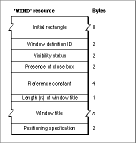

The Window Resource
You typically define a window resource for each type of window that your application creates. Figure 4-24 illustrates a compiled'WIND'resource.Figure 4-24 Structure of a compiled window (
'WIND') resource
A compiled version of a window resource contains the vollowing elements:
- The upper-left and lower-right corners, in global coordinates, of a rectangle
that defines the initial size and placement of the window's content region.
Your application can change this rectangle before displaying the window,
either programmatically or through an optional positioning code described
later in this section.- The window's definition ID, which incorporates both the resource ID of the window definition function that will handle the window and an optional variation code. Together, the window definition function resource ID and the variation code define a window type. Place the resource ID of the window definition function in the upper
12 bits of the definition ID. Window definition functions with IDs 0 through 127 are reserved for use by Apple Computer, Inc. Place the optional variation code in the lower 4 bits of the definition ID.If you're using one of the standard window types (described in "Types of Windows" beginning on page 4-8), the definition ID is one of the window-type constants:
CONST documentProc = 0; {movable, sizable window, } { no zoom box} dBoxProc = 1; {alert box or modal dialog box} plainDBox = 2; {plain box} altDBoxProc = 3; {plain box with shadow} noGrowDocProc = 4; {movable window, no size box or } { zoom box} movableDBoxProc = 5; {movable modal dialog box} zoomDocProc = 8; {standard document window} zoomNoGrow = 12; {zoomable, nonresizable window} rDocProc = 16; {rounded-corner window}You can also add a zoom box to a movable modal dialog box by specifying the sum
of two constants:movableDBoxProc + zoomDocProc, but a zoom box is not recommended on any dialog box.You can control the angle of curvature on a rounded-corner window (window type
rDocProc) by adding one of these integers:
Window definition ID Diameters of curvature rDocProc 16, 16 rDocProc + 2 4, 4 rDocProc + 4 6, 6 rDocProc + 6 10, 10
- A specification that determines whether the window is visible or invisible. This characteristic controls only whether the Window Manager displays the window, not necessarily whether the window can be seen on the screen. (A visible window entirely covered by other windows, for example, is "visible" even though the user cannot see it.) You typically create a new window in an invisible state, build the content area of the window, and then display the completed window.
- A specification that determines whether or not the window has a close box. The Window Manager draws the close box when it draws the window frame. The window type specified in the second field determines whether a window can support a close box; this field determines whether the close box is present.
- A reference constant, which your application can use for whatever data it needs to store. When it builds a new window record, the Window Manager stores, in the
refConfield, whatever value you specify in the fifth element of the window resource. You can also put a placeholder here and then set therefConfield yourself with theSetWRefConprocedure.- A string that specifies the window title. The first byte of the string specifies the length of the string (that is, the number of characters in the title plus 1 byte for the length),
in bytes.- An optional positioning specification that overrides the window position established by the rectangle in the first field. The positioning value can be one of the integers defined by the constants listed here. In these constant names, the terms have the following meanings:
center Centered both horizontally and vertically, relative either to a screen or to another window (if a window to be centered relative to another window is wider than the window that preceded it, it is pinned to the left edge; a narrower window
is centered)stagger Located 10 pixels to the right and 10 pixels below the upper-left corner of the last window (in the case of staggering relative to a screen, the first window is placed just below
the menu bar at the left edge of the screen, and subsequent windows are placed on that screen relative to the
first window)alert positionCentered horizontally and placed in the "alert position" vertically, that is, with about one-fifth of the window or
screen above the new window and the rest belowparentwindowThe window in which the user was last working The seventh element of the resource can contain one of the values specified by
these constants:CONST noAutoCenter = 0x0000;{use initial } { location} centerMainScreen = 0x280A;{center on main } { screen} alertPositionMainScreen = 0x300A;{place in alert } { position on main } { screen} staggerMainScreen = 0x380A;{stagger on main } { screen} centerParentWindow = 0xA80A;{center on parent } { window} alertPositionParentWindow = 0xB00A;{place in alert } { position on } { parent window} staggerParentWindow = 0xB80A;{stagger relative } { to parent window} centerParentWindowScreen = 0x680A;{center on parent } { window screen} alertPositionParentWindowScreen = 0x700A;{place in alert } { position on } { parent window } { screen} staggerParentWindowScreen = 0x780A;{stagger on parent } { window screen}The positioning constants are convenient when the user is creating new documents or when you are handling your own dialog boxes and alert boxes. When you are creating a new window to display a previously saved document, however, you should display the new window in the same rectangle as the previous window (that is, the window the document occupied when it was last saved). For more information, see "Positioning a Document Window on the Desktop" beginning on page 4-30.Use the
GetNewCWindoworGetNewWindowfunction to read a'WIND'resource. Both functions create a new window record and fill it in according to the values specified in a'WIND'resource.